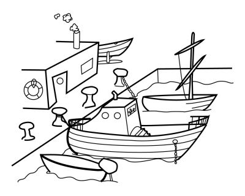

Den lille havneby Hou, der kendes af mange for færgeforbindelserne til Tunø og Samsø, gik i går i chok. Om formiddagen fandt en bådejer [ ] liget af en bagbunden og likvideret mand i havnebassinet.
"Jeg er selvfølgelig rystet over, at jeg fandt den myrdede mand i vores havn. Det er jo ikke noget, [ ] oplever hver dag," siger bådejeren, der tidligere har været sømand og før har set druknede.
Bådejeren mener ikke, at manden kan være myrdet i Hou.
"De fleste i Hou tror, at han er blevet likvideret et andet sted og er kørt [ ] af gerningsmændene og smidt i havnen."
På Restaurant Skuden var likvideringen dagens store samtaleemne, fortæller indehaver Inger Mikkelsen.
"Folk er [ ] over mordet. Nu er sådanne grove forbrydelser simpelthen kommet for tæt på vores lille by," siger Inger Mikkelsen.
"Det er for væmmeligt. Vi er vant til lidt biltyverier nede ved færgehavnen, men ikke [ ] i den her størrelsesorden. Folk håber på, at det er én, der er skyllet ind fra åbent vand, så han ikke er blevet smidt i havnen her. For det bliver næsten værre, [ ] Hou er et sted, hvor mordere bare kan komme af med deres lig."
